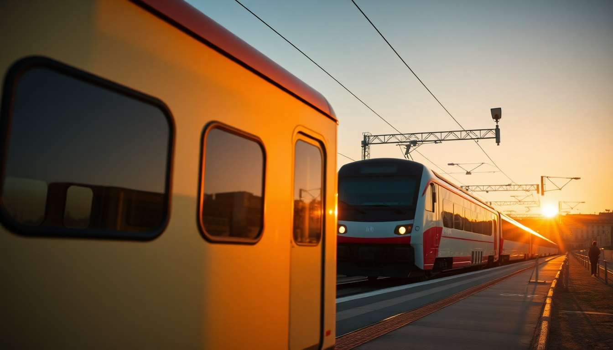

How to Get Around Italy: Trains, Flights & Rental Cars

I’ve crisscrossed Italy a dozen times, and the biggest mistake I see tourists make is assuming one mode of transport works everywhere. Trains are great between cities like Rome, Florence, and Venice, but try taking one to a hilltop village in Tuscany and you’ll be waiting for a bus that never comes. This guide breaks down exactly when to book a high-speed train, when to splurge on a cheap flight, and when to grit your teeth and rent a car.
Should I take the train between major cities?
Yes, almost always. High-speed trains in Italy are reliable, fast, and cheaper than flying if you book ahead. The two main operators are Trenitalia (the state-owned one) and Italo (the private competitor). Both run the same routes between Rome, Florence, Venice, Milan, and Naples.
I prefer Italo for their quieter carriages and slightly better snacks, but Trenitalia’s Frecciarossa trains are just as good. The trip from Roma Termini to Firenze Santa Maria Novella takes about 1.5 hours. From Florence to Venezia Santa Lucia is roughly 2 hours. Book tickets on the operator’s app at least two weeks out for the best prices—a one-way Rome to Florence can drop to €20.
- Trenitalia covers more regional routes (like the slow trains through Cinque Terre)
- Italo only runs high-speed, but has more legroom and free WiFi that actually works
- Avoid the Regionale trains for long distances—they’re cheap but slow and often crowded
- If you’re hopping between Rome, Florence, and Venice, don’t bother with a rail pass; point-to-point tickets are cheaper
When does it make sense to fly instead of taking the train?
Only when you’re crossing the entire boot. Rome to Milan is a 3-hour train ride, which beats the door-to-door time of flying. But Rome to Palermo or Catania in Sicily? That’s an 8-hour train plus ferry. Fly.
Low-cost carriers like Ryanair, EasyJet, and Wizz Air connect major cities to smaller airports. I flew from Rome Fiumicino to Catania Fontanarossa for €35 one-way. The catch: airports are often far from city centers. Venice Marco Polo is a 20-minute water bus from St. Mark’s Square, but Milan Bergamo is an hour bus ride from Milan’s center.
- Use flights for Sicily, Sardinia, or the far south (Naples to Palermo)
- Avoid flying between Rome, Florence, and Venice—it’s not faster
- Book carry-on only to skip bag fees; Ryanair charges €25 at the gate
- Check Rome Ciampino airport for cheaper flights, but budget an extra 45 minutes for the bus into town
Is renting a car in Italy a good idea?
It depends entirely on where you’re going. In Rome, Florence, or Venice, a car is a liability—parking is scarce, ZTL (limited traffic zones) fines are brutal, and you’ll spend more time looking for a spot than actually seeing sights. I once watched a couple in a Fiat 500 get towed outside Piazza della Signoria in Florence. Don’t be them.
But if you’re heading into the countryside—Tuscany’s Chianti region, the Val d’Orcia, or the hills around Bologna—a rental car is the only way to explore. We rented from Avis at Firenze Peretola Airport for €45/day. The freedom to stop at a random vineyard near Montepulciano was worth every euro.
- Pick up and drop off at airports to avoid city ZTL zones
- Get a car with GPS or use your phone with offline maps; cell signal drops in rural hills
- Expect manual transmission unless you specifically request automatic (and pay extra)
- Avoid driving in Venice—it’s an island. Park at Piazzale Roma garage (€25/day) and walk
What’s the best way to get around Rome, Florence, and Venice once I’m there?
Each city has its own rhythm. In Rome, the metro is limited (only two lines), but it connects Termini to the Colosseum and Vatican City. Buses fill the gaps, but they run late. I walked everywhere in Rome—it’s the only way to stumble onto a piazza like Piazza Navona without planning it.
In Florence, you can walk the entire historic center in 20 minutes. The T2 tram runs from the airport to Santa Maria Novella, but you won’t need it otherwise. Skip the hop-on-hop-off bus; it’s a waste of money.
Venice is all water. The vaporetto (water bus) is your metro. Buy a 24-hour pass for €25 if you’re moving between islands like Murano and Burano. For a splurge, a gondola ride costs €80 for 30 minutes—do it once for the photo, then stick to the vaporetto.
- Rome: Metro line B to Colosseo station; bus 64 to St. Peter’s (watch for pickpockets)
- Florence: Walk everywhere; the Ponte Vecchio is a 10-minute walk from the Duomo
- Venice: Vaporetto line 1 runs the Grand Canal; line 12 goes to Murano
- Avoid taxis in all three cities—they’re overpriced and often stuck in traffic
How do I handle luggage between cities?
Italy’s train stations are not luggage-friendly. Roma Termini has elevators, but they’re often broken. Venezia Santa Lucia has a long bridge from the platform to the canal. I learned the hard way dragging a 25kg suitcase up the steps of the Ponte degli Scalzi.
Pack light. A carry-on roller and a backpack is the sweet spot. For longer trips, use a luggage storage service like Radical Storage (€5 per bag per day) near major stations. In Florence, we dropped our bags at a shop near Piazza della Signoria and explored hands-free before our evening train.
- Use Trenitalia’s luggage storage at Termini (€6 for 24 hours)
- Avoid suitcases with two wheels; four-wheel spinners roll better on cobblestones
- In Venice, book a hotel near the Rialto Bridge or St. Mark’s Square to minimize bridge crossings with luggage
- Consider a private water taxi in Venice if you have heavy bags—€70 from the station to your hotel, but worth it
FAQ
What’s the cheapest way to travel between Rome, Florence, and Venice? The cheapest is the Regionale train, but it takes 3-4 hours between cities. For a balance of cost and time, book Italo or Frecciarossa tickets two weeks ahead for €20-30 per leg. Buses like FlixBus are cheaper (€10-15) but take twice as long.
Do I need to book train tickets in advance? Yes, for high-speed trains. Prices double at the station on the day of travel. For regional trains, you can buy at the station kiosk—they’re fixed-price and don’t sell out. Just validate the ticket in the green machine before boarding, or you’ll get a €50 fine.
Is it worth getting a Eurail pass for Italy? No, unless you’re visiting multiple countries. Italy’s high-speed trains are cheap enough point-to-point that a pass rarely pays off. The Eurail Italy Pass costs €200+ for three days; three separate tickets between Rome, Florence, and Venice cost about €70 total.
Conclusion
- Trains are the best bet for Rome, Florence, and Venice—book Italo or Frecciarossa in advance for the best price
- Flights only make sense for Sicily, Sardinia, or the deep south; skip them for the main trio
- Rental cars are a nightmare in cities but essential for Tuscany’s countryside; watch for ZTL signs
- Pack light—Italian stations and cobblestones will punish heavy luggage
- Walk in Florence, metro in Rome, and vaporetto in Venice; taxis are a last resort